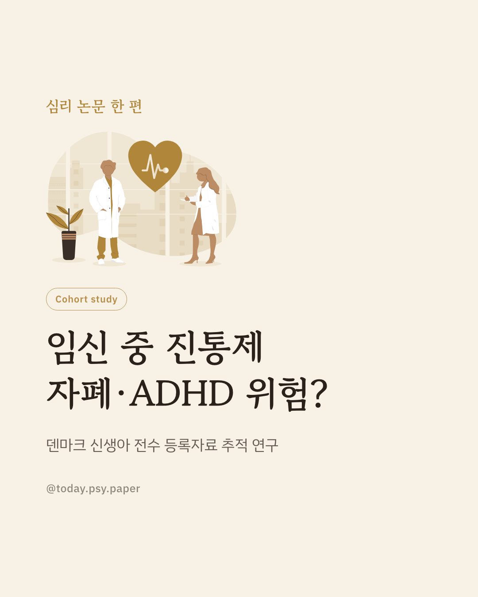
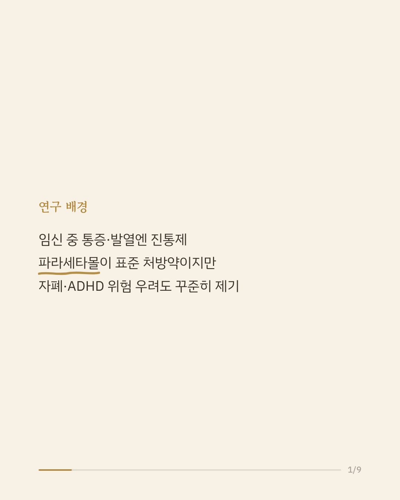
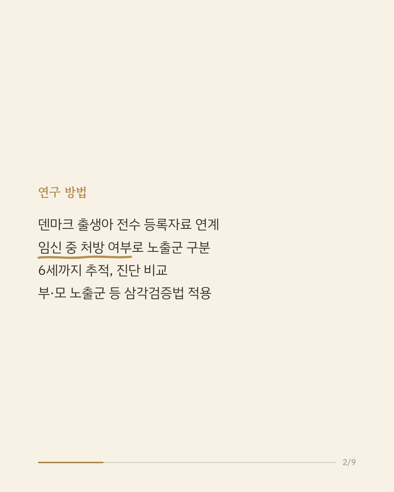
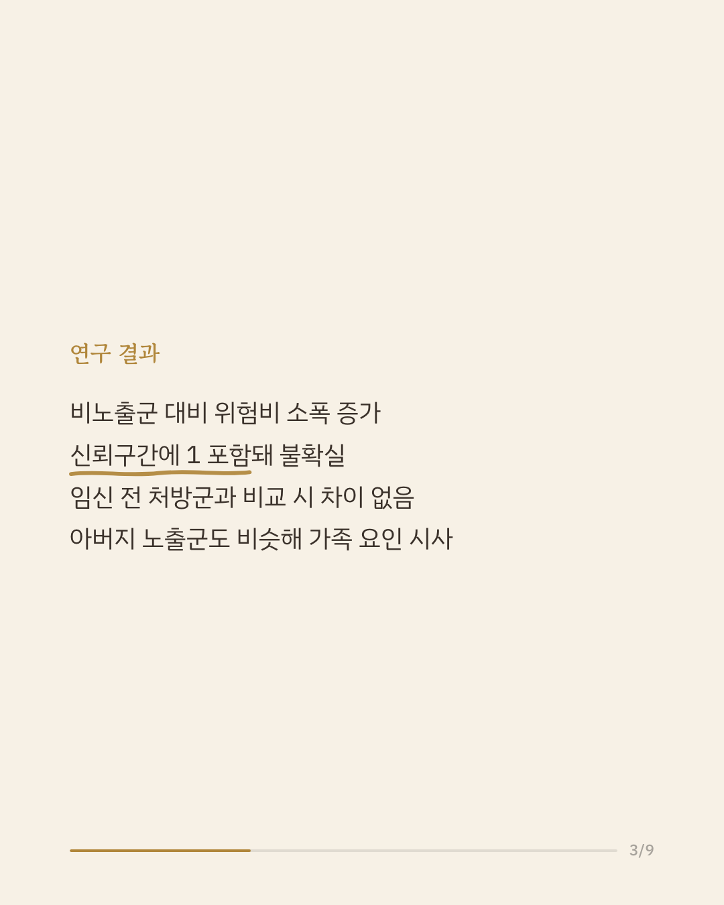
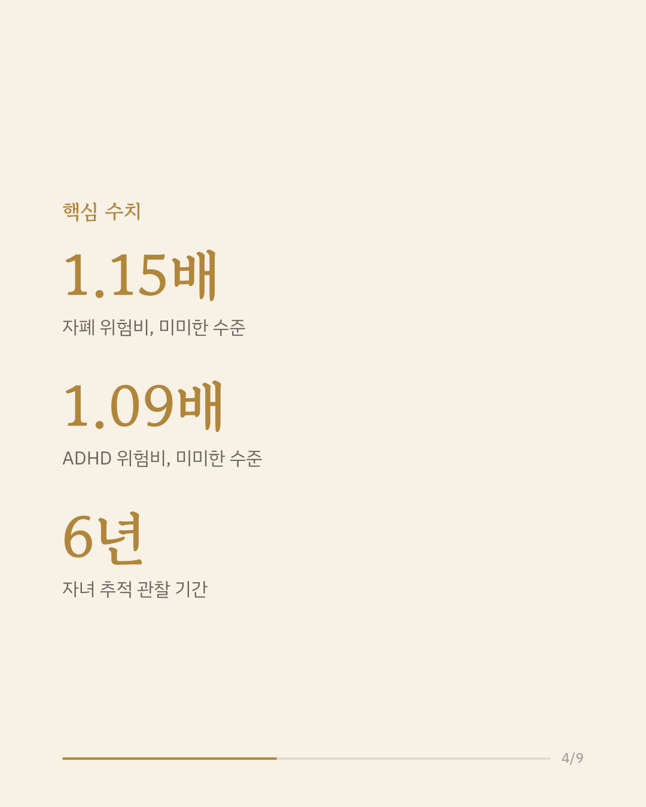
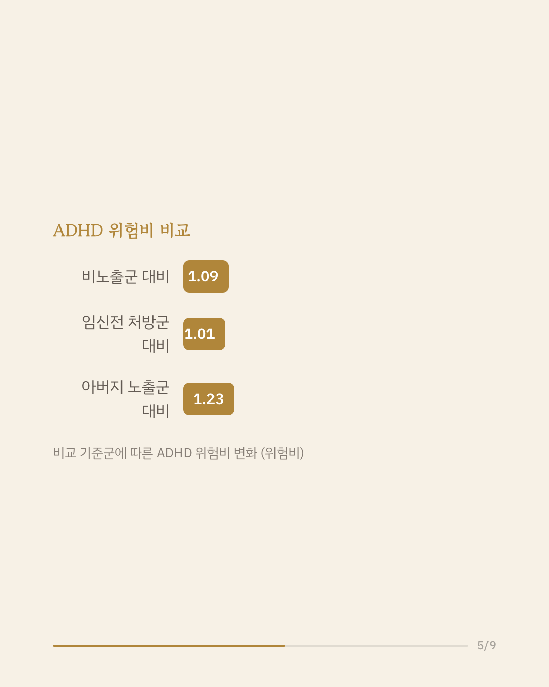
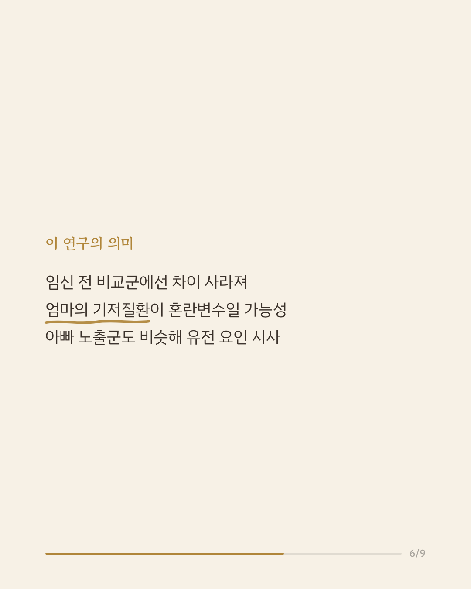
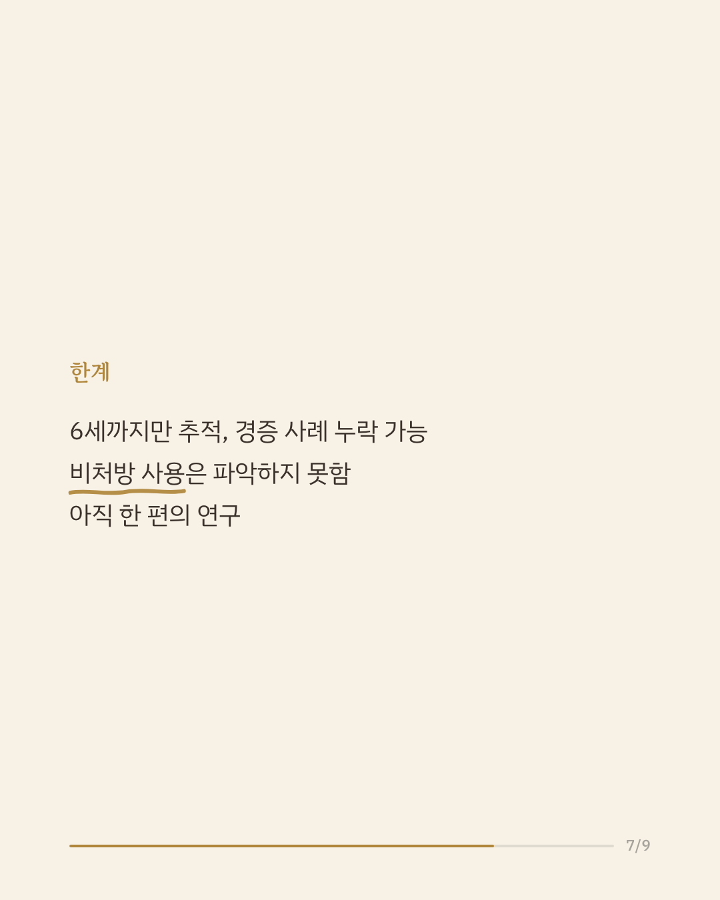
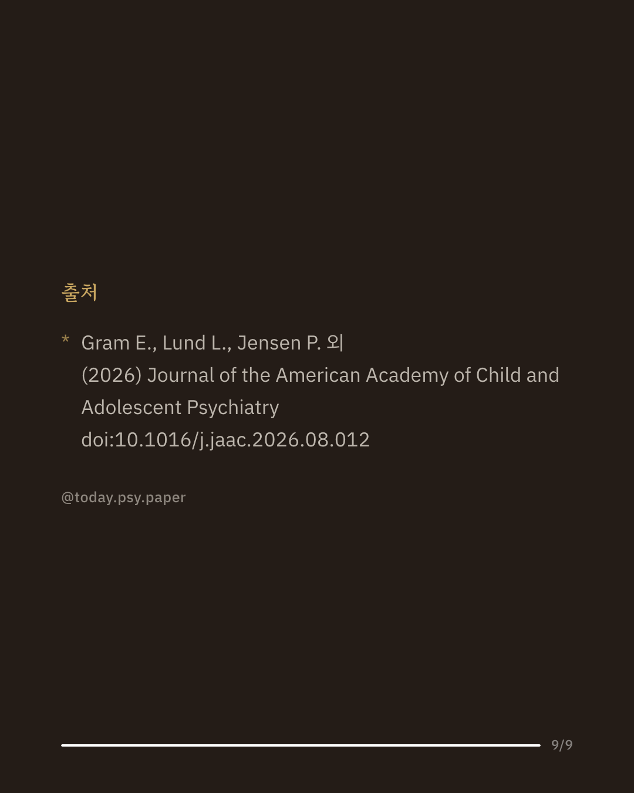

임신 중 진통제·해열제로 흔히 쓰는 타이레놀(파라세타몰)이 아이의 자폐 스펙트럼 장애나 ADHD 위험을 높이는지는 오랫동안 논쟁이 있었습니다. 덴마크에서는 2013년부터 파라세타몰 대부분이 처방을 통해서만 판매되기 시작하면서, 이를 활용한 대규모 인구 기반 연구가 가능해졌습니다. 연구팀은 2014년부터 2021년까지 태어난 덴마크 단태아와 그 부모의 전국 등록 자료를 연계해, 임신 중 파라세타몰 처방을 받은 아이들이 6세까지 자폐나 ADHD로 진단받을 위험을 비노출 아동과 비교했습니다. 단순 비교에서는 위험비가 자폐 1.15배, ADHD 1.09배로 소폭 높게 나타났지만, 신뢰구간이 1을 포함해 통계적으로 뚜렷한 차이라 보기는 어려웠습니다. 임신 전에만 처방받고 임신 중엔 받지 않은 여성의 자녀와 비교했을 때는 이 차이가 사라졌고, 아버지가 노출된 경우에도 비슷하거나 오히려 더 높은 위험비가 나타나 엄마의 기저질환이나 가족 공통 요인이 실제 원인일 가능성이 제기됐습니다. 연구팀은 처방 기반 파라세타몰 사용이 6세 이전 진단되는 자폐·ADHD의 임상적으로 의미 있는 위험 증가로 이어질 가능성은 낮다고 결론지었습니다. 다만 추적 기간이 짧아 경증이거나 늦게 진단되는 사례는 포착하지 못했을 수 있습니다. 단일 연구이므로 확대 해석은 조심해야 합니다. 출처: Journal of the American Academy of Child and Adolescent Psychiatry, 2026. #임신중약물사용 #자폐스펙트럼장애 #ADHD연구 #소아청소년정신건강
python3 publish.py 42660286